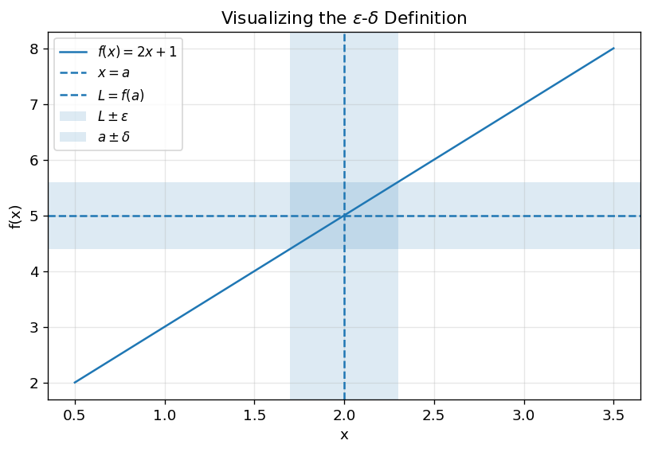
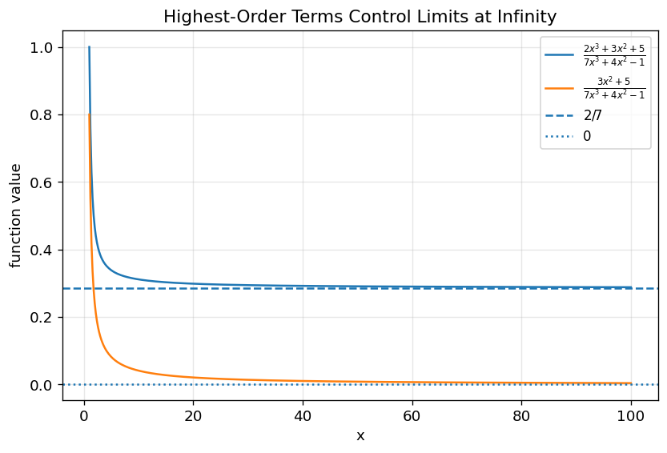
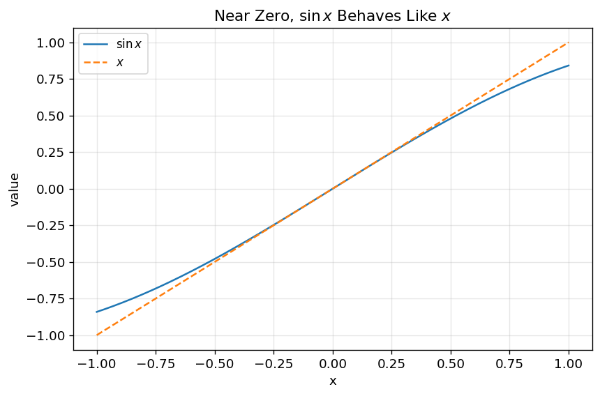
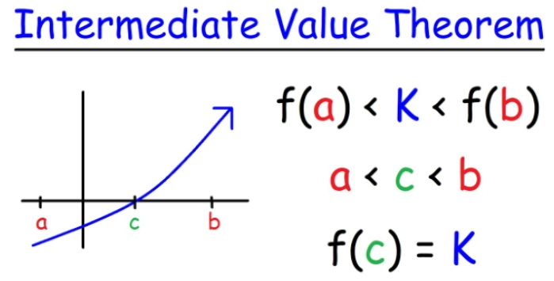

3. Limits and Continuity — Understanding Function Behavior Near a Point#
4. Limit（极限） and Continuity（连续性）#
4.1. Learning Objectives#
After reading this chapter, you should be able to:
Explain what a
limitmeans intuitively and formally.Distinguish the value of a function from the limit of a function.
Determine the
domain（定义域）of common functions.Evaluate limits using direct substitution, factorization, rationalization, highest-order terms, and standard limits.
Use
equivalent infinitesimals（等价无穷小）to simplify limit problems.Determine whether a function is
continuous（连续）at a point.Identify different types of
discontinuities（间断点）.Use the
Intermediate Value Theorem（介值定理）to prove that an equation has a solution.Use Python to visualize limits, continuity, and discontinuity.
5. 1. Why This Topic Matters#
Calculus begins with one central question:
What happens to a function as the input gets closer and closer to a certain value?
This question is not always the same as asking what the function value is at that point.
For example, consider:
At \(x=1\), the function is not defined because the denominator becomes zero. But if we simplify:
for \(x \ne 1\). As \(x\) approaches \(1\), the function approaches:
So the function has no value at \(x=1\), but it still has a limit there.
This distinction is fundamental. Without limits, we cannot properly define derivative（导数）, differential（微分）, Taylor Expansion（泰勒展开）, or continuity（连续性）. In fact, the derivative definition in your later differential chapter is built directly from a limit of difference quotients.
Limits help us answer questions such as:
What happens near a point where a formula breaks?
Does a function approach a stable value?
Does a graph have a jump, a hole, or a vertical asymptote?
Can we approximate one function by another near a point?
Is a piecewise function continuous?
Does an equation have at least one solution in an interval?
The main idea is simple but powerful:
A limit describes where a function is going, not necessarily where it is.
6. 2. Big Picture Intuition#
Imagine walking toward a house.
You may never actually enter the house, but you can still say where you are approaching. A limit works the same way.
When we write:
we mean:
As \(x\) gets closer and closer to \(a\), the function value \(f(x)\) gets closer and closer to \(L\).
The important point is that \(x\) approaches \(a\), but does not have to equal \(a\).
So the limit cares about nearby behavior, not only the value exactly at the point.
x approaches a from the left x approaches a from the right
→ → → a ← ← ←
If f(x) approaches the same value L from both sides, then the two-sided limit exists.
A function may have:
a function value but no limit,
a limit but no function value,
both a function value and a limit, but they are not equal,
both a function value and a limit that are equal.
Only the fourth case gives continuity.
7. 3. Domain and Function Equivalence#
Before solving limits, we must understand where a function is defined.
7.1. 3.1 Domain（定义域）#
The domain of a function is the set of input values for which the function is valid.
Common rules:
Expression type |
Domain restriction |
|---|---|
\(\frac{1}{g(x)}\) |
denominator cannot be \(0\) |
\(\sqrt{g(x)}\) |
\(g(x)\geq0\) |
\(\frac{1}{\sqrt{g(x)}}\) |
\(g(x)>0\) |
\(\ln(g(x))\) |
\(g(x)>0\) |
\(\arcsin x,\arccos x\) |
\(-1\leq x\leq1\) |
Example:
The denominator cannot be zero, and the square root must be real and positive:
So:
Therefore, the domain is:
7.2. 3.2 Function Equivalence（函数相等）#
Two functions are equal only if they have:
the same domain,
the same output for every input in that domain.
For example:
is not exactly the same function as:
because \(f(x)\) is undefined at \(x=0\), while \(g(x)\) is defined at \(x=0\).
However, for limit purposes near \(x=0\), we may sometimes simplify expressions after remembering that the original function may have a missing point.
This is why domain matters.
8. 4. Formal Definition of a Limit#
The formal definition is the \(\epsilon\)-\(\delta\) definition（\(\epsilon\)-\(\delta\)定义）.
We say:
if for every:
there exists:
such that:
whenever:
8.1. What the symbols mean#
\(a\): the input value that \(x\) approaches
\(L\): the value that \(f(x)\) approaches
\(\epsilon\): how close we want \(f(x)\) to be to \(L\)
\(\delta\): how close \(x\) must be to \(a\)
\(0<|x-a|\): \(x\) is near \(a\), but not equal to \(a\)
In words:
No matter how small a target distance \(\epsilon\) we choose around \(L\), we can find a small enough input distance \(\delta\) around \(a\), so that all nearby \(x\)-values make \(f(x)\) fall inside the target distance.
This is a precise way to express “getting close.”
8.2. Figure Demo 1: Visualizing the \(\epsilon\)-\(\delta\) Idea#
import numpy as np
import matplotlib.pyplot as plt
plt.rcParams.update({
"font.size": 11,
"axes.titlesize": 13,
"axes.labelsize": 11,
"legend.fontsize": 10,
"figure.dpi": 120
})
def f(x):
return 2*x + 1
a = 2
L = f(a)
epsilon = 0.6
delta = epsilon / 2
x = np.linspace(0.5, 3.5, 400)
y = f(x)
plt.figure(figsize=(8, 5))
plt.plot(x, y, label=r"$f(x)=2x+1$")
plt.axvline(a, linestyle="--", label=r"$x=a$")
plt.axhline(L, linestyle="--", label=r"$L=f(a)$")
plt.axhspan(L - epsilon, L + epsilon, alpha=0.15, label=r"$L\pm\epsilon$")
plt.axvspan(a - delta, a + delta, alpha=0.15, label=r"$a\pm\delta$")
plt.xlabel("x")
plt.ylabel("f(x)")
plt.title(r"Visualizing the $\epsilon$-$\delta$ Definition")
plt.legend()
plt.grid(True, alpha=0.3)
plt.show()

What this figure teaches:
If \(x\) is kept within the \(\delta\)-window around \(a\), then \(f(x)\) stays within the \(\epsilon\)-window around \(L\).
9. 5. How to Solve Limit Problems Step by Step#
A useful workflow is:
Step 1: Check the domain.
Step 2: Try direct substitution.
Step 3: If direct substitution works, stop.
Step 4: If it gives 0/0 or another indeterminate form, simplify.
Step 5: Use factorization, rationalization, standard limits, equivalent infinitesimals, or L’Hôpital’s Rule.
Step 6: Interpret the result.
Try the simplest valid method first.
10. 6. Core Techniques for Solving Limits#
10.1. 6.1 Direct Substitution#
If \(f(x)\) is continuous at \(x=a\), then:
Example:
Direct substitution is the first method you should try.
10.2. 6.2 Factorization#
Example:
Direct substitution gives:
Factor the denominator:
So:
for \(x\neq1\).
Therefore:
This is not saying the original expression is defined at \(x=1\). It says the nearby behavior is equivalent for the purpose of the limit.
10.3. 6.3 Rationalization（有理化）#
Example:
Direct substitution gives:
Multiply numerator and denominator by the conjugate:
Then:
The denominator becomes:
So:
for \(x\neq4\).
Therefore:
10.4. 6.4 Highest-Order Terms for \(x\to\infty\)#
For rational functions, the highest power of \(x\) usually controls the limit.
Example 1:
The numerator and denominator have the same highest degree, so the limit is the ratio of leading coefficients.
Example 2:
The denominator grows faster.
Example 3:
The numerator grows faster.
10.5. Figure Demo 2: Highest-Order Terms Dominate#
import numpy as np
import matplotlib.pyplot as plt
x = np.linspace(1, 100, 500)
f1 = (2*x**3 + 3*x**2 + 5) / (7*x**3 + 4*x**2 - 1)
f2 = (3*x**2 + 5) / (7*x**3 + 4*x**2 - 1)
plt.figure(figsize=(8, 5))
plt.plot(x, f1, label=r"$\frac{2x^3+3x^2+5}{7x^3+4x^2-1}$")
plt.plot(x, f2, label=r"$\frac{3x^2+5}{7x^3+4x^2-1}$")
plt.axhline(2/7, linestyle="--", label=r"$2/7$")
plt.axhline(0, linestyle=":", label="0")
plt.xlabel("x")
plt.ylabel("function value")
plt.title("Highest-Order Terms Control Limits at Infinity")
plt.legend()
plt.grid(True, alpha=0.3)
plt.show()

What this figure teaches:
As \(x\) becomes large, lower-order terms become relatively less important. The leading terms determine the long-run behavior.
11. 7. Important Limit Results#
11.1. 7.1 The Sine Limit#
One of the most important limits is:
This means:
as \(x\to0\).
In words:
Near zero, \(\sin x\) behaves like \(x\).
This result is foundational for later derivative and Taylor Expansion chapters. In the differential chapter, the local approximation idea \(dy=f'(x)dx\) is used to approximate small changes. In the Taylor chapter, the expansion
explains why \(\sin x\sim x\) near zero.
11.2. Figure Demo 3: Why \(\sin x\sim x\) Near Zero#
import numpy as np
import matplotlib.pyplot as plt
x = np.linspace(-1, 1, 400)
plt.figure(figsize=(8, 5))
plt.plot(x, np.sin(x), label=r"$\sin x$")
plt.plot(x, x, "--", label=r"$x$")
plt.xlabel("x")
plt.ylabel("value")
plt.title(r"Near Zero, $\sin x$ Behaves Like $x$")
plt.legend()
plt.grid(True, alpha=0.3)
plt.show()

What this figure teaches:
Near \(x=0\), the curves \(y=\sin x\) and \(y=x\) almost overlap. That is the visual meaning of \(\sin x\sim x\).
11.3. 7.2 The Exponential Limit#
Another fundamental limit is:
More generally:
and:
Examples:
This limit is important because it connects repeated small multiplicative changes to exponential growth.
12. 8. Equivalent Infinitesimals#
An infinitesimal（无穷小）is a quantity that approaches \(0\).
Two infinitesimals \(f(x)\) and \(g(x)\) are equivalent if:
We write:
as \(x\to a\).
This means:
Near the limit point, \(f(x)\) and \(g(x)\) have the same leading-order behavior.
Common equivalent infinitesimals as \(x\to0\):
Important correction:
is a first-order approximation, but as an infinitesimal equivalence, the more useful form is:
because both sides approach \(0\).
12.1. Worked Example: Equivalent Infinitesimals#
Evaluate:
Use:
and:
Therefore:
If the numerator were \(\ln(1+2x)\), then:
and the result would be:
This distinction is important: the coefficient inside the small quantity matters.
12.1.1. The equivalent of functions#
The same domain and the same mapping
i. \(f(x) = \ln(x - 1) \neq g(x) = \ln\sqrt{(x - 1)^2}\)
ii. \(f(x) = \frac{x}{x} \neq g(x) = 1\)
iii. \(f(x) = \sqrt{x^2} = g(x) = |x|\)
iv. \(f(x) = \begin{cases} -x, & x \geq 1 \\ 1, & x < 1 \end{cases} \neq g(x) = \begin{cases} 0, & x = 1 \\ 1, & x < 1 \end{cases}\)
12.1.2. The definition of limit#
Let \(f(x)\) be a function defined on an interval that contains \(x = a\), except possibly at \(x = a\). Then we say that,
if for every number \(\epsilon > 0\) there is some number \(\delta > 0\) such that
12.2. Solve the limit Problem#
12.2.1. Substitute Directly#
12.2.2. L’Hopital’s Law#
i. Infinity to infinity
ii. Infinity small to infinity small
12.2.3. The Property of infinity (∞) and infinity small (0)#
The product of infinity small with bounded function (e.g., \(\sin x \), \(\cos x \), \(\arctan x \), \(arccot x \)) is infinity small.
12.2.4. Three special cases#
Factorization
Rationalization of numerator and denominator
Get the highest order \(x\to \infty\)
12.3. Two important limit#
i. \(\lim_{u(x) \to 0} \frac{\sin u(x)}{u(x)} = 1\)
Prove using the definition of differential
a) \(\lim_{x \to 0} \sin x = x\)
\[ f'(x) = \frac{f(x + \delta) - f(x)}{\delta} \to f(x + \delta) = f(x) + f'(x) \ast \delta, \text{ when } \delta \to 0 \]\(\sin (x + \delta) \approx \sin x + \cos x \ast \delta\) when \(\delta \to 0\)
\(\sin \delta \approx 0 + \delta\), when \(\delta \to 0\)
Replace \(\delta\) with \(x\), \(\lim_{x \to 0} \sin x = x\)
ii. \(\lim_{A \to \infty} \left(1 + \frac{1}{A}\right)^A = e\)
Prove using Taylor’s Formula
\[ e < \left(1 + \frac{1}{k}\right)^k = 1 + \frac{k}{1} \left(\frac{1}{k}\right)^1 + \frac{k(k - 1)}{1 \cdot 2} \left(\frac{1}{k}\right)^2 + \frac{k(k - 1)(k - 2)}{1 \cdot 2 \cdot 3} \left(\frac{1}{k}\right)^3 + \cdots \]a)
\[ e = 1 + \frac{1}{2!} + \frac{1}{3!} + \cdots = e \]\(\lim_{x \to \infty} \left(1 - \frac{2}{x}\right)^x = e^{-2} = \frac{1}{e^2}\)
\(\lim_{x \to 0} (1 - 2x)^{\frac{1}{x}} = e^{-2}\)
\(\lim_{x \to \infty} \left(1 + \frac{1}{n}\right)^{n+3} = e\)
12.4. Equivalence of infinity small#
i. \(\lim_{x \to 0} \frac{\sin x}{x} = 1 \to \sin x \sim x \ (\text{when } x \to 0)\)
ii. \(1 - \cos x \sim \frac{1}{2} x^2\)
Prove: \(\lim_{x \to 0} \frac{1 - \cos x}{\frac{1}{2}x^2} = \frac{\sin x}{x} = 1\)
iii. \(\ln(1 + x) \sim x\)
Prove: \(\ln(1 + x + \delta) = \ln(1 + x) + \frac{\delta}{1 + x} = \ln 1 + \delta \to \ln(1 + \delta) \approx \delta \text{ when } \delta \to 0 \text{ and } x = 0\)
\(\lim_{x \to 0} \frac{\ln(1 + x)}{\sin 3x} = \frac{2x}{3x} = \frac{2}{3}\)
iv. \(e^x - 1 \sim x\)
v. \((1 + x)^\alpha = 1 + \alpha x\)
Prove: \((1 + x + \delta)^\alpha = (1 + x)^\alpha + (\alpha \delta)(1 + x)^{\alpha - 1} \to (1 + \delta)^\alpha = 1 + \alpha \delta \text{ when } \delta \to 0 \text{ and } x = 0\)
12.5. Continuous#
12.5.1. Continuous in functions#
\(f(x)\) has a definition at \(x_0\)
\(\lim_{x \to x_0} f(x) = f(x_0)\)
12.5.2. Example#
\(f(x) = \begin{cases} x^2 + 2a, & x \leq 0, \\ \frac{\sin x}{2x}, & x > 0 \end{cases}\)
is continuous at \(x = 0\), what’s the value of \(a\)?
Answer
\(\lim_{x \to 0} (x^2 + 2a) = 2a\), \(\lim_{x \to 0} \frac{\sin x}{2x} = \frac{1}{2} = 2a \to a = \frac{1}{4}\)
12.6. The break points of functions#
The point with invalid definition
The point with no limits
a. \(x = 3\) for \(f(x) = \frac{x^2 + 1}{x - 3}\), with limit \(= \infty\)
The point with limit that does not equal to its function value
12.7. The Intermediate Value Theorem#
If \(f(x)\) is continuous on the closed interval \([a, b]\) and \(k\) is any number between \(f(a)\) and \(f(b)\), then there exists at least one value \(c\) in the interval \((a, b)\) such that \(f(c) = k\).
a. Prove there is a solution of \(x^3 - 4x^2 + 1 = 0\) on the interval \((0,1)\).
